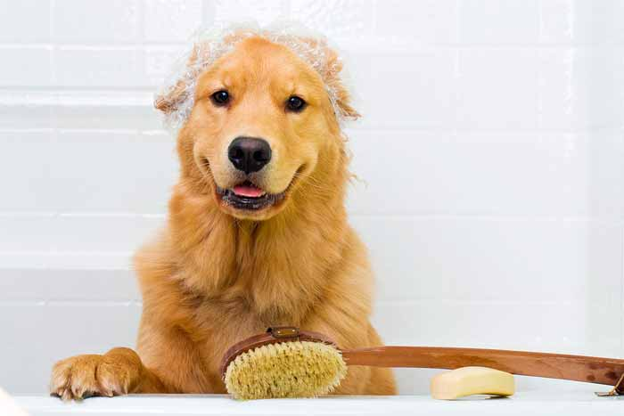
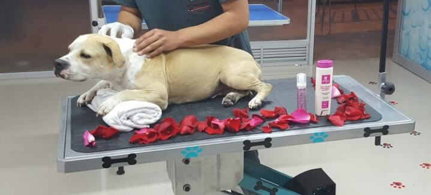

Fiel a la creencia de que las mascotas se parecen a sus dueños, los perros también sufren de estrés tal como los seres humanos, para eso, un spa para mascotas es es un establecimiento de salud que ofrece tratamientos, terapias o sistemas de relajación, utilizando como base principal el agua y cuidar la salud de nuestros caninos.
Lo normal es que cualquier persona que tenga una mascota quiera darle lo mejor en alimentación, cuidados y salud. Como los humanos, la piel y pelo de nuestras mascotas puede servir de entrada para muchas enfermedades, pero también puede facilitar su prevención. La piel de una mascota requiere de muchos cuidados e higiene para garantizar su salud.
Tratamientos de spa para mascotas

Existen muchos tratamientos como la talasoterapia basada en el agua de mar y sus algas. Otro tratamiento se basa en plantas medicinales que protegen de muchas enfermedades como el carbón de bambú japònés que les limpia, desodoriza y actúa como antioxidante del sebo. Aplicados con un masaje estos bálsamos estimulan su circulación y les tonifica.
Sus sentidos más desarrollados contribuyen a la eficacia de los tratamientos dérmicos. Por ejemplo, el baño con sales aromáticos actúa más rápido en los animales por su gran sentido del olfato.
Un circuito de spa para perros puede incluir lavado de hidromasaje en cabina insonorizada, una ducha de agua pulverizada que les abre los poros, hidromasaje que le tonifica y enjuague.El secado se inicia en la cabina y se termina a mano, se seca con una toalla, se le puede aplicar una mascarilla nutritiva para la piel para recuperar la humedad que pierde en el baño y se pasa a la cabina secadora, la forma más relajante y efectiva de secarle en lugar de usar el secador cuyo ruido es muy molesto.
¿Como es el procedimiento?

Un primer baño con agua tibia, donde se hacen masajes para quitar pelaje muerto.
Se procede al baño antipulgas.
Baño nutricional con Shampo de PH neutro para que quede totalmente limpio el pelo.
Masaje para estimular el drenaje linfático y así el cabello nuevo salga mucho más brillante y dure mucho más tiempo y su perro no suelte pelo en la casa.
Finalmente, un último baño en Bálsamo (dependiendo el tipo de pelaje: negro, dorado, crespo...) de este modo, se estimula la dermis y el pelo de su perro será mucho más robusto y mucho más sedoso.
Lavado de oídos con agua de rosas, que da una experiencia agradable y fresca a los oídos.
Se pulen las uñas.
Se limpian o se lavan los dientes, dependiendo de la necesidad del perro.
Eliminación de sebo anal.
Decoración y colonia según la personalidad del perro.